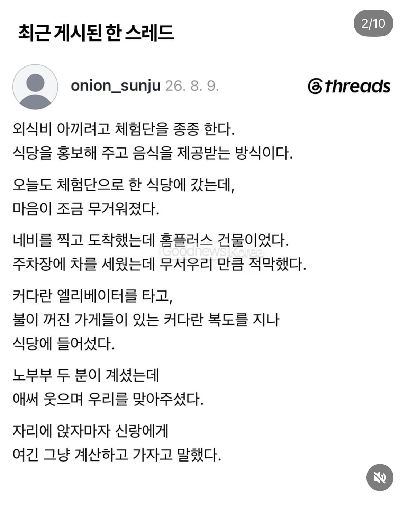
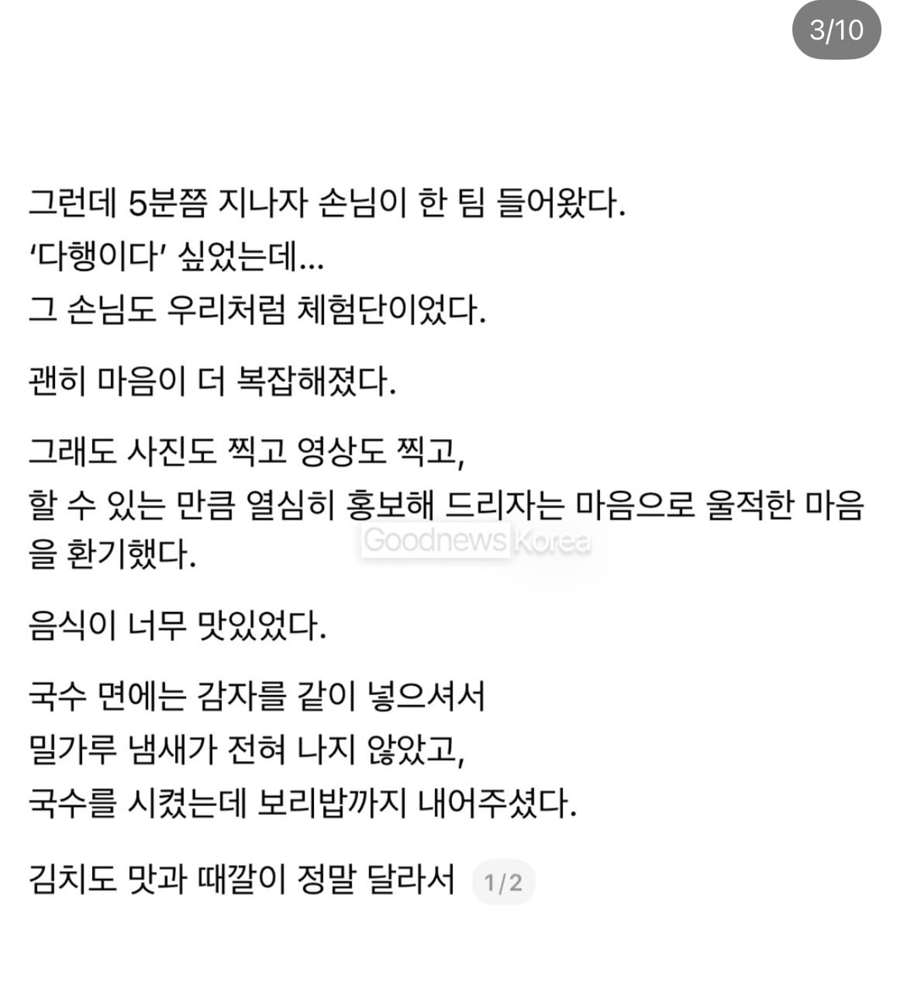
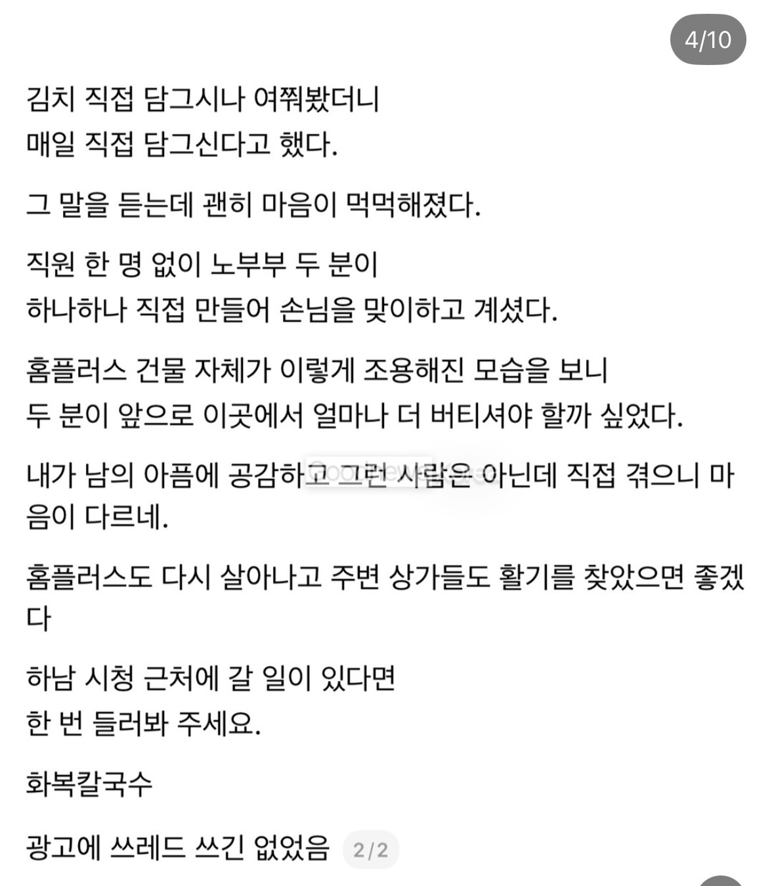
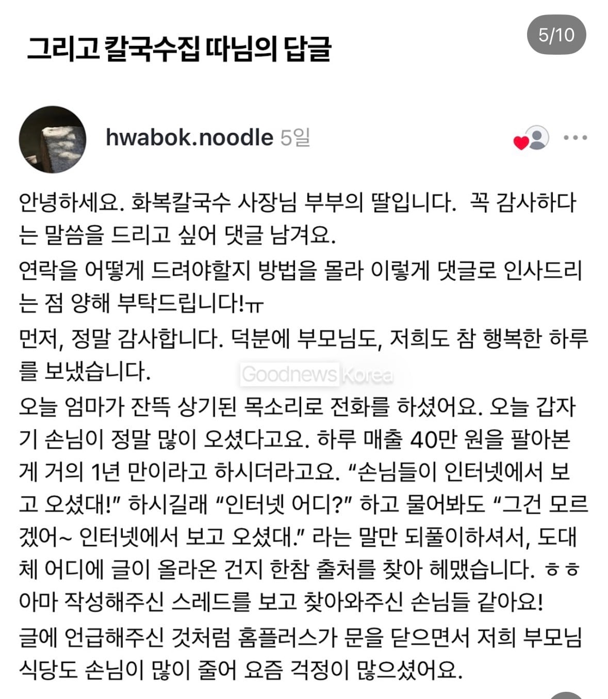
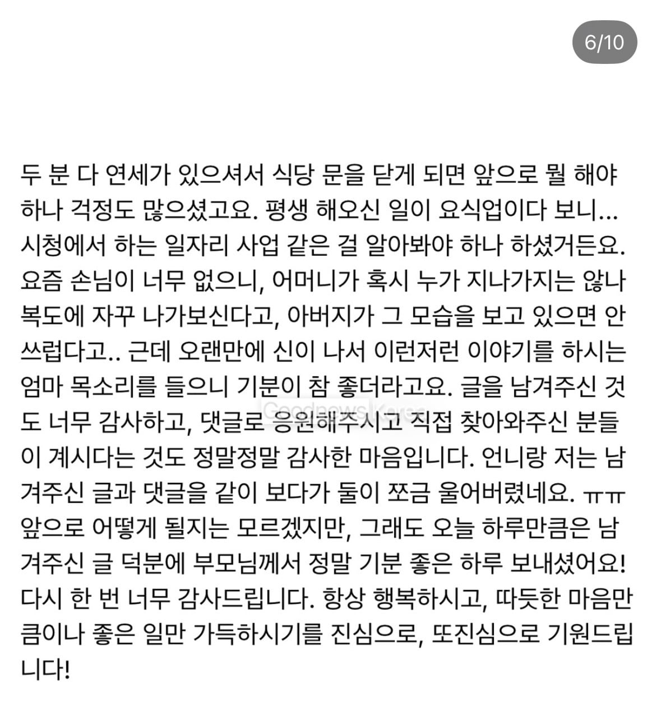
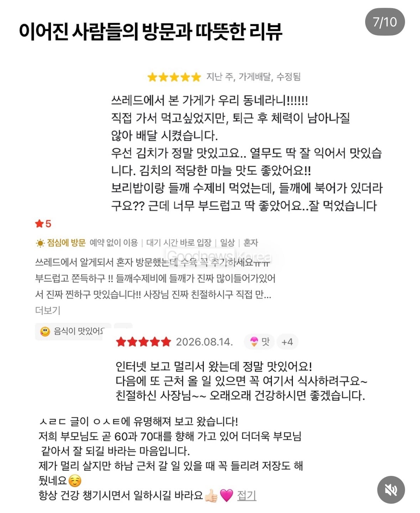
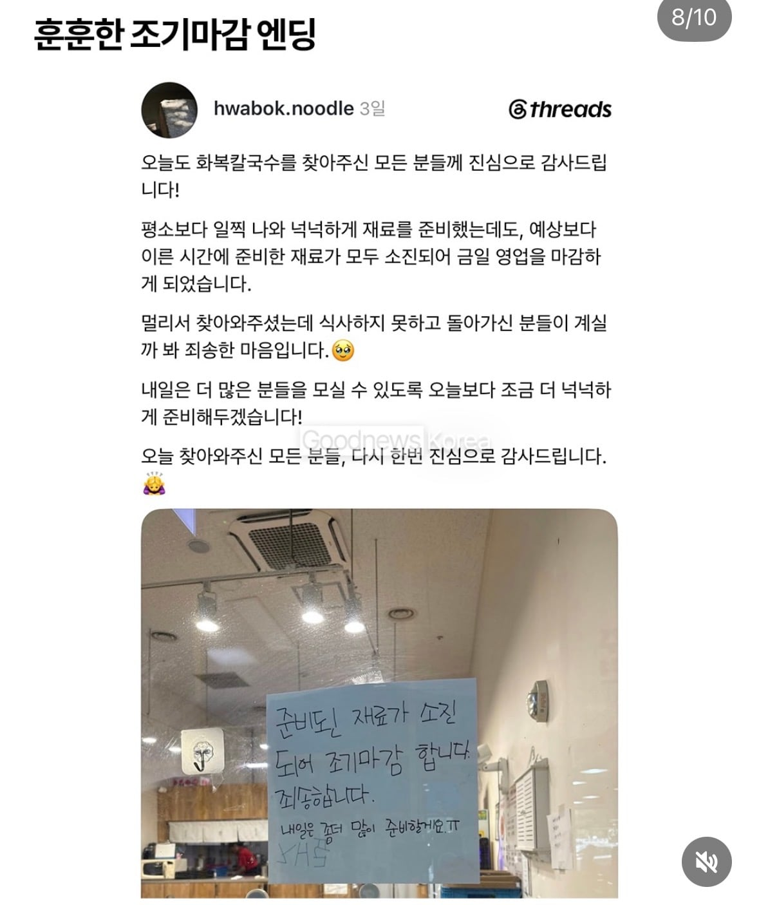
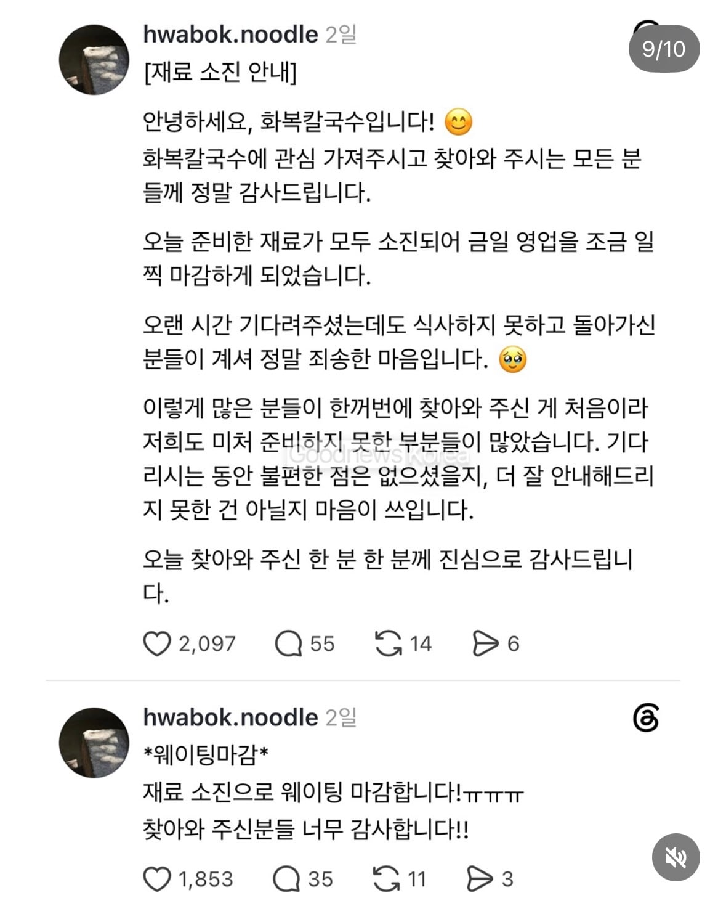
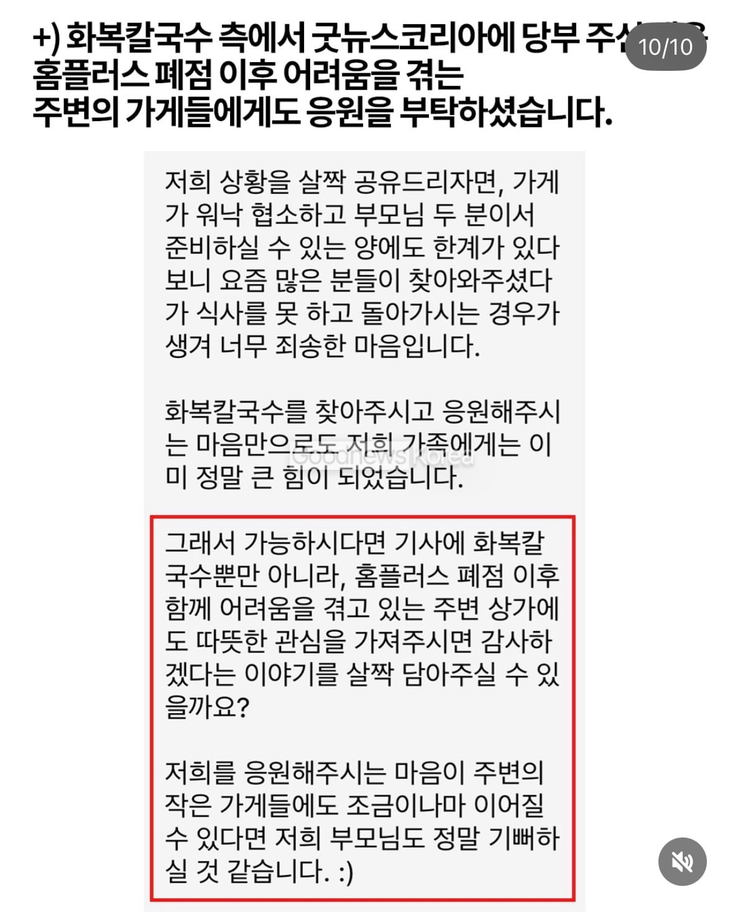

        
댓글
수집 당시 댓글 47개
일간부재중 · 4 일 전
somewhere · 4 일 전
기분좋네
동행복권 · 4 일 전
이번에 홈플 영끌이벤트때매 소고기값 많이싸ㄷ더라 국거리용으로 좀 많이사왓음 그래서
푸씨푸씨베이베 · 3 일 전
소고기로 국거리 장단은 좀ㅠ
오이쉬 · 4 일 전
좋은곳으로 옮겨가실수 있으면 좋겠네
BigJay · 4 일 전
하남이면 남양주 놀러갈때 함 들러야겟군 흐흐
미국너구리 · 4 일 전
홈플 다시 열었다길래 가봣는데 딱 구색만 가추고 영업연거더라..종류도 몇개없고 갯수고 얼마없고 씁쓸하더라
구라치지마 · 4 일 전
물건 떼오고 싶어도 돈 못받을까봐 불안해서 못주겠다 하니까 넣을게 없긴해
능지 · 4 일 전
협력사는 매출채권 회수 못할 리스크로 납품을 안하니 방법이 없음.. 지금 그나마 납품된걸로 현금 먼저 확보하고 신뢰성 쌓아서 공급망 늘리는게 최우선
년만에회원가입처음함 · 4 일 전
강서점은 한우 50프로세일 해가지고 사람 개몰림
년전통할매국밥 · 4 일 전
ㄹㅇ.. 뭔가 사서 응원해야지 하고 갔는데 진짜 구색만 갖춰서 씁쓸했음
클린로브링어 · 3 일 전
그래도 pb상품만 진열해놓은것보다는 매장 같던데 빈자리는 어쩔 수 없고
장래희망휴먼 · 4 일 전
글을 참 잘썼어
랩터는이제꿩 · 4 일 전
결이 다르긴 한데 망할 수록 피어나는 문학 느낌
꼬꼬마동산 · 4 일 전
여울이 · 4 일 전
재료 소진까지 간거면 단순 바이럴 흥행을 넘어 맛까지 좋은 듯.. 잘 됐으면 좋겠네
하양둥 · 4 일 전
홈플 재오픈 했대서 가봤는데 세일 겁나하고있고 물품도 적음 재오픈이 아니라 마지막 재고정리가 아닌가 싶을정도로... 가게분들 표정이 다 안좋더라; 근데 그만큼 세일은 많이 해서 옷가지랑 먹을거랑 돈좀 쓰고옴
생긴게완전개그 · 4 일 전
사실 서민을 살리는건 서민이더라...홈플이 서민이 된거같어..이근처에 있으면 자주 갈텐데
전설의히토미전설 · 4 일 전
근처 국수집인데 수제김치면 갈만하지
포츈아그렇구나 · 4 일 전
이게 인간찬가다
키라라 · 4 일 전
오 가깝네. 가봐야지.
훈지를바라는삶 · 4 일 전
요즘같은 개인화된 사회에서 이런 사례와 메시지는 사람들을 움직이기에 최고의 동력이 된다고 생각함. 8090년대의 현대인들은 개인의 영역을 중시하면서도 동시에 예전같은 사람냄새나는 시절을 그리워하기 때문에
한미반도체 · 4 일 전
잘 되셨음 좋겠다..
가성비좋은비지니스호텔 · 4 일 전
청바지벨트 · 4 일 전
이런 글 참 좋다
양순이 · 4 일 전
동네인데 언제 함 가봐야
어린왕자지드래곤 · 4 일 전
나 이거보고 울었음 어르신이 쓰신 글도 있는데 그거 보고 또 욺
아마란타인 · 3 일 전
나이 먹어서 그래 나도 욺
sjtigowksbfu · 4 일 전
하남시청 홈플 나도 자주 갔지 주차 편하고 매장도 크고 사람들은 별로 없고 아참 울 애기 돌잔치도 그 건물에서 했음. 그리고 거기 홈플러스 같은 층에 소아과가 어마어마 하게 인기가 많았던게 생가남
더블그라탕버거 · 4 일 전
좋은이야기네...
네이론 · 4 일 전
스레드 정신병자 소설
와츄뿌뿌뿡 · 4 일 전
모든걸 소설로만 생각하는 커뮤니티 정신병자 그자체
게이트 · 3 일 전
???: 방밖의 세계는 존재 안한다구욧
만원만주십시오 · 4 일 전
오늘존나춥다 · 4 일 전
많이힘들구나.. 정말 힘내라
웃겨 · 3 일 전
개드립 정신병자 붕이
네이론 · 3 일 전
스레드하는 개찐따 씹덕 새끼들 난리났네ㅋㅋ
푱푱하다푱푱한 · 3 일 전
스레드 관련해서 좋은 글 처음본다 어쨌든 좋은 글은 좋다
물왕 · 3 일 전
같은건물에 콩국수하는집 있는데 거기도 존나맛집임
댕하 · 3 일 전
Sns의 순기능이네
팔얼블 · 3 일 전
가서 좀 사줘야겠다 홈플러스에 어릴때 추억이 새록새록하다 엄마아빠 따라 가기만 해도 놀이공원 간 느낌이었는데
스네크 · 3 일 전
주옥 · 3 일 전
아 눈물나온다 늙었나보다
MS08소대 · 3 일 전
가끔보면 대형마트 푸드코트에 들어와있는 식당들 개쩌는 맛집들이 있더라 가격도 그리 비싸지도 않고 그래서 천안에 출장갈때마다 뭐 살것도 없는데 홈플러스 자주 갔지
아몰랑레후 · 3 일 전
여기 맛있음 하남시청에 들렀다가 먹었는데 아무리봐도 맛있는데 손님이 많이 없더라 ㅜㅜ 잘됏다
Rkize · 3 일 전
하남 홈플러스 망해서 무조건 이마트만 가는데 이마트 주차난이 미쳤음 그래서 트레이더스 갈려면 트레이더스도 주차난이 미쳤음 그나마 홈플러스는 주차칸이 엄청 조그만한데 카니발,쏘렌토,팰리세이드 모는놈들이 미칠듯이 주차해놔서 집어넣기가 짜증나긴 했어도 매장 멀리 주차하면 항상 가능했었는데 ㅜㅜ..
헷박 · 3 일 전
ToT